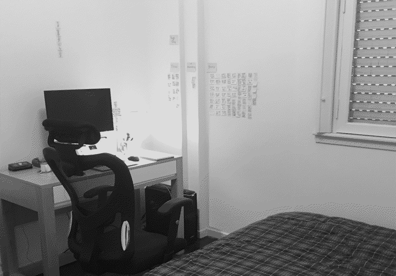
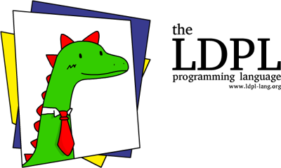
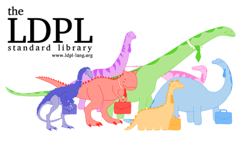
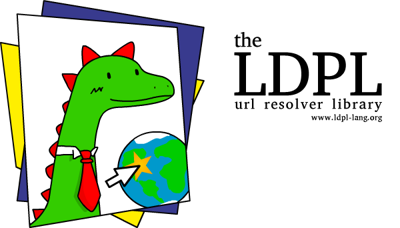
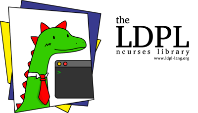
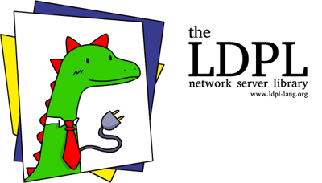
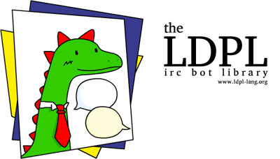

computing : games & art : research
sitemap
|
|
home
computing : games & art : research sitemap |
— E69D41 (b&w version) (quantized 16C) - view original (1145 KiB, JPG)
In this page I use the (†) symbol to mark projects that are no longer maintained (or, at least, that are no longer maintained by me). The other projects here may receive updates in the future, but there's no guarantee.
— O78W19 - view original (75 KiB, PNG)
LDPL is a free, powerful, compiled, open-source programming language designed from the ground up to be excessively expressive, readable, fast and easy to learn. LDPL was designed to run on Unix systems, including AMD-64 Linux, macOS, ARMv8 Linux, Android Termux and both Intel and PowerPC OS X (tested from Tiger 10.4 onwards). It even supports UTF-8 out of the box.
I originally designed LDPL as a parody language, inspired both by COBOL and PHP, typically disliked languages1, but it took some traction on its own, so we kept developing it alongside wonderful contributors from all over the world.
— W71N55 - view original (224 KiB, PNG)
(†) polaris is a stack-based, concatenative, interpreted programming language with strings as its only data type. It has been designed to be small in size and minimal in language features. Polaris was conceived to run under Unix systems. It has been written in C++98, so it can probably be compiled with any C++ compiler out there.
(†) LAPL, a cozy and familiar scripting language written in C++ and Antlr4. With a dinosaur!
(†) nari, a stack-based, dynamically-typed scripting language.
(†) LarBASIC, a tiny BASIC interactive interpreter with string support.
(†) malady, an experimental but simple and elegant string-substitution based esolang.
(†) cherryl, a string-based, embeddable, minimal concatenative programming language.
(†) mauifish, a robust and predictable compiled programming language loosely based on COBOL syntax. It served as the basis for LDPL.
(†) mastropiero, a little experimental 'compiler' that turns source code into music.
(†) htmlkoala, an HTML preprocessor.
(†) LBI, a Brainfuck Interpreter written in LDPL.
— K27H78 - view original (78 KiB, PNG)
(†) p5.clickable, a p5.js library that lets you create and customize buttons and assign event-based behaviours to them. With p5.clickable you can create buttons and define what happens when the user hovers over, clicks, releases or moves the cursor outside of them.
As far as I know, p5.clickable is still being maintained, but I'm no longer involved with the project on a regular basis.
— F19A11 - view original (225 KiB, PNG)
ldpl-std, the LDPL Standard Library, a collection of LDPL libraries that contain many useful pre-written statements for the LDPL Programming Language that are not included in the base language.— L02S00 - view original (85 KiB, PNG)
ldpl-url-resolver, the LDPL URL Resolver Library, is a super easy to use library for LDPL that helps you resolve URLs into their respective IP addresses.— T81P31 - view original (77 KiB, PNG)
ldpl-ncurses, the LDPL Ncurses Library is a ncurses wrapper for LDPL, designed for creating terminal applications that require more complex text user-interfaces than simple line-feeding. It aims to make it very easy to move text across a console, change text colors, read user key-presses, etc.— R35A75 - view original (86 KiB, PNG)
ldpl-net-server, the LDPL Network Server Library is an library for creating socket based servers in LDPL. It aims to make it very easy to develop, test and deploy network servers, with as little work as possible.— T63Z71 - view original (82 KiB, PNG)
ldpl-irc-bot, the LDPL IRC Bot Library is a super easy to use IRC bot library for LDPL. It lets you write LDPL programs that connect to IRC servers, join channels, send messages and react to received messages in the simplest way possible.(†) ldpl-fltk, LDPL FLTK, a GUI library for the LDPL programming language. It lets you create graphical user interfaces with maximum ease. It is a simple FLTK wrapper designed to make GUI building easy to learn and to extend.
shibahug, a plug-and-Play PHP library that makes interfacing PHP with MySQL as easy as pie.
(†) cppregex, a very simple, single header file, easy to use C++11 std::regex wrapper for lazy people who just want to use regex in C++ without having to mingle with std::regex boilerplate code. In other words, a simple C++ regex library.
cpptrim, a simple trim function library for C++ strings (removes leading and trailing whitespace from strings).
lstring, a simple, utf-8 string library for C++. It lets you use strings like "你好，世界！" and index and substring them and take their lengths.
(†) chText, a string library for C++ that provides the chText type: a string type used just like regular C++ strings but with UTF-8 support. The LDPL TEXT data-type is based on this library.
coralDB, an extremely simple and minimal in-memory key-value database for distributed applications and microservices.
starqueue, an extremely simple and minimal message queue server for distributed applications and microservices.
tmon, the [You]Tube Monitor, is a tool to make regular, local backups of your YouTube music playlists. It's pronounced te-mon, with te like in tetris and mon like in monitor.
(†) lute, Lartu's Utility for Text Editing, is a simple, no-nonsense text editor for Unix and general *nix systems written in LDPL.
(†) OpenNapkin, a graphical Gopher client written in Gambas3. I wrote OpenNapkin because I wasn't able to find another Gopher client that wasn't written only for console or that wasn't part of a much bigger web-browsing suite.
led, the LDPL Text Editor, is a line text editor written in LDPL, inspired by the ed and sed text editors, but friendlier!
(†) explicartu is a tool for writing software reference documentation. The documentation is written within code and compiled to an HTML page that can be easily read.
(†) mgit, the Multicentralized Git Toolbox is a Git frontend for mulicentralized Git operations. Essentially, mgit lets you pull and push from multiple remote repositories at the same time with a single command.
(†) beKnowledge is a tool designed to help you read faster by letting you read without moving your eyes. beKnowledge shows you words one after another in the same place at your choosen pace. It also gives you pauses to blink and a pause every 1000 words so you can rest your eyes and drink a sip of your coffee.
ast, the average and sum tool, is a command line tool designed to calculate the sum, mean, variance or standard deviation of lists of numbers.
(†) lartype is a lightweight, LaTeX inspired markup document editor.
(1) Hating on COBOL and PHP seems to be a trend on the internet, much like hating on Hawaiian pizza. I do enjoy these three things very much.